five paradigms × three lenses, rendered by Workbench's renderer and frozen with the package CSS only · regenerate with pnpm specimens
| paradigm | design | simulate | analyze |
|---|---|---|---|
| architecture | 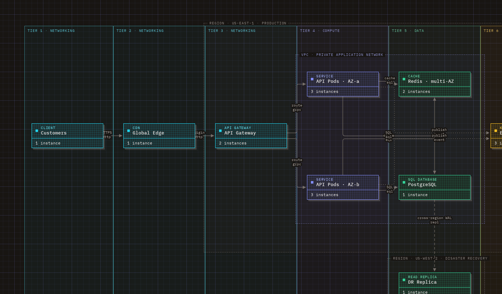 | 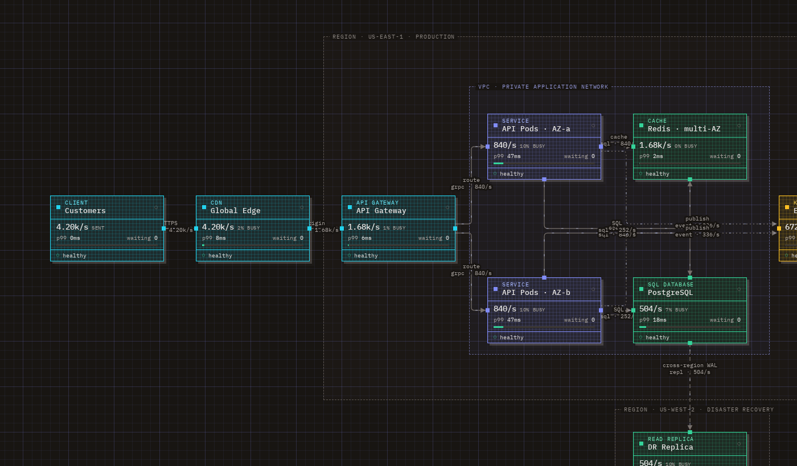 | 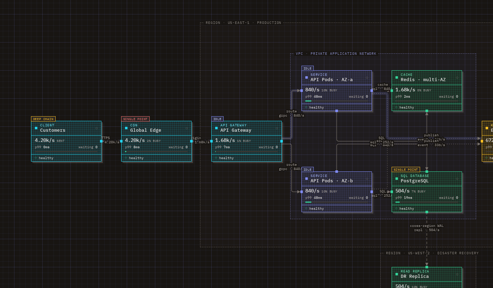 |
| workflow | 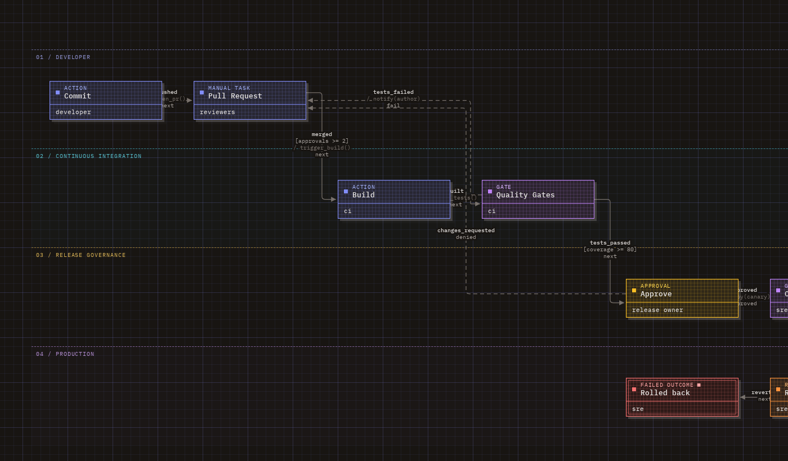 | 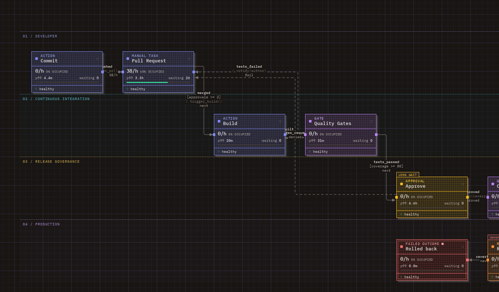 | |
| sequence | 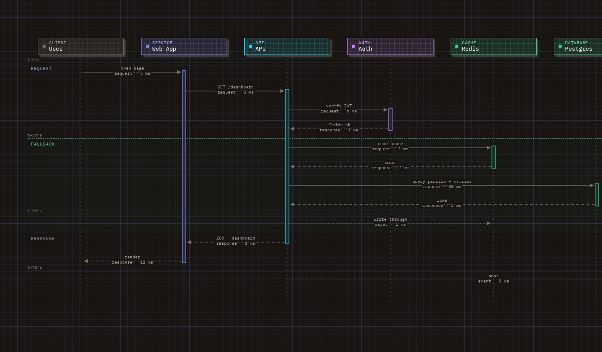 | 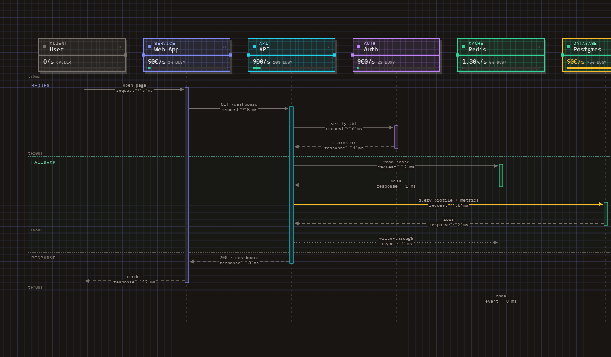 | 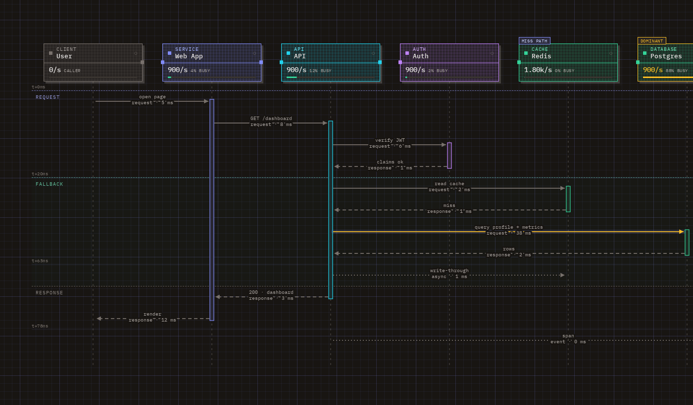 |
| dataflow | 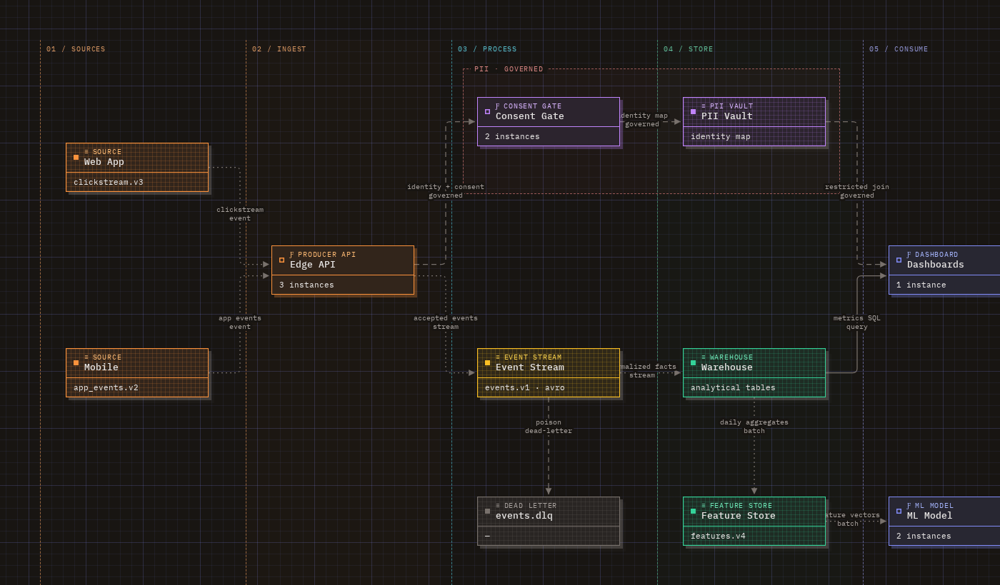 | 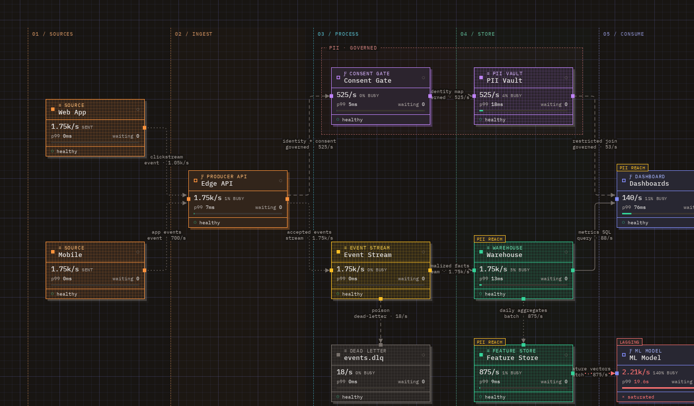 | |
| state | 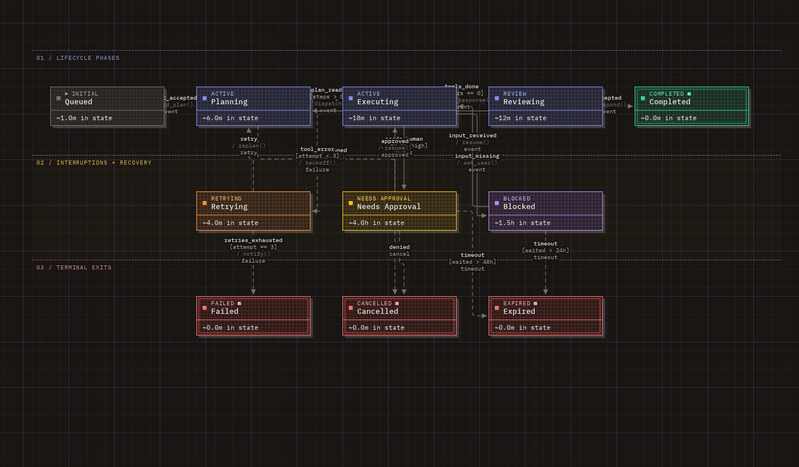 | 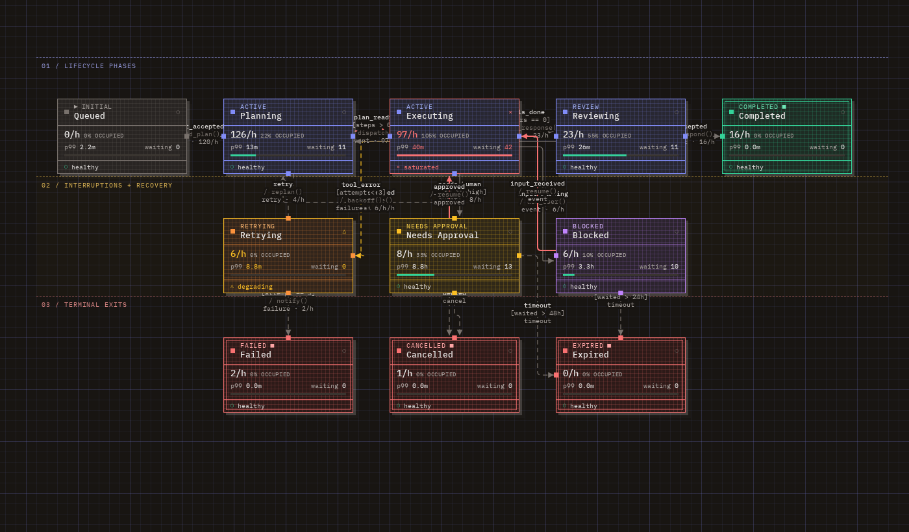 | 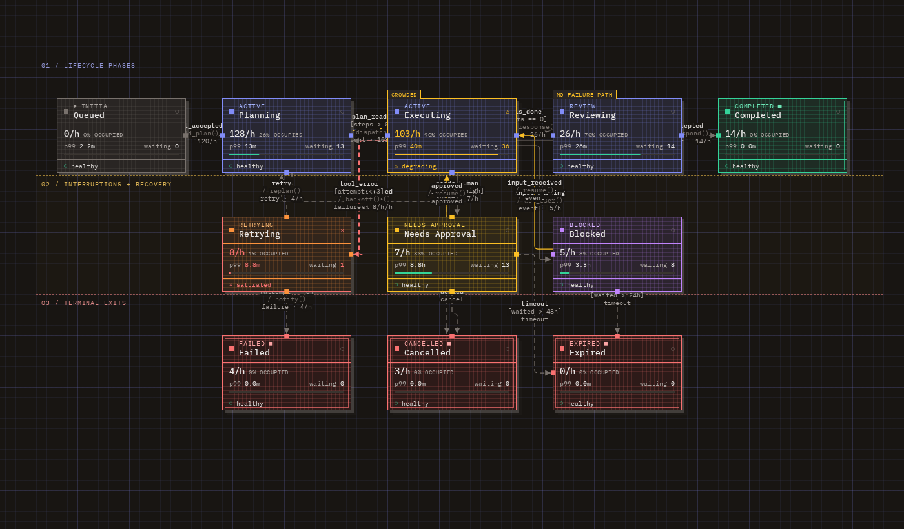 |